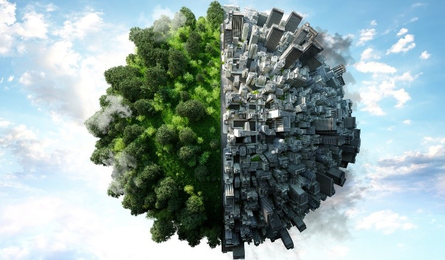
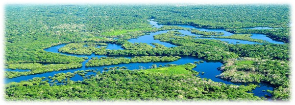
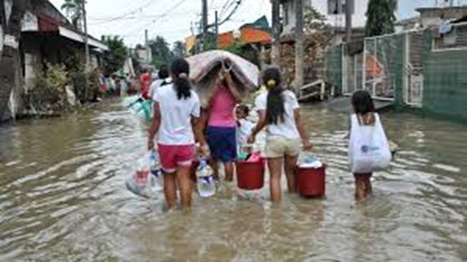

1. Introduction
Despite the earth being home to millions of species only one dominates. This specie has become more deadly than volcano
eruptions, shifting tectonic plates, wildfires or floods and is the greatest menace threatening to wipe out life within its
few centuries of modernization. Humans have evolved over the millenniums to showcase their ingenuity, resourcefulness,
adaptability and innovation but their way of life is killing the only place they call home.
 The rise of the middle class and social trends catalysed innovations in production processes which ushered in the industrial revolution that began in the late 18th century in textile mills in the United Kingdom. This milestone in human history helped nations develop their technologies faster to meet the needs of their expanding population but it also brought along its own set of problems. Huge energy needs led industries to burn up coal, natural gas and petroleum at increasing rates to satisfy a growing global consumerism culture. These have added to the release of significant amounts of CO2 and other greenhouse gases into the atmosphere; they contributed to increased global temperatures and effectively ushered us into the Anthropocene epoch.1
Fast forward a few generations later to the 21st century and not much has changed as we have become a race totally dependent on fossil fuels. In our rather brief history of modernization, we seem bent on exhausting all available resources within our reach including energy sources that have taken millions of years to form.
2. Effects of our choices
The earth is in constant flux; its climate is changing, the continents are moving, species gradually die out and others dominate.
The climate change cycle is a natural phenomenon the earth undergoes every couple thousands of years. There are significant
archaeological evidence pointing to several ice ages over the last 650,000 years that have contributed to migrations and changes
in the biosphere.2 So why the worry? The exponential rate of change is not giving lifeforms, including humans,
enough time to adapt as the ecosystem is thrown into upheaval initiating a rapid species extinction. It has been throrised that some great empires like the Khmers and Akkadians have had the reigns of their empires cut short by overpopulation, mass migration and
overexploitation. Their activities magnified the stress on the environment which contributed to strains on their resources
leading to adverse changes in their microclimate which helped initiate the decline of their civilisations.3
Similar changes to the biosphere are negatively affecting the earth's carrying capacity. Extreme weather patterns are affecting ocean and land temperatures which are consequently affecting fish, flora and wildlife thereby increasing the risk of uncertainty in communities that live off the land. Besides the physical discomfort one experiences from the heatwaves, studies have linked climate change to the spread of diseases. Warmer temperatures make the environment more habitable for microbes, parasites and disease vectors. It allows them spread to regions where they were previously non-natives.4 With the right conditions in place, a breakdown in infrastructure caused by a single catastrophic regional event can send shockwaves of infections around the globe creating a pandemic that could wipe out millions of lives.
Mining and clearing the Amazon Forest for farming is rapidly depleting one of the largest carbon storages on the planet and releasing tonnes of CO2 into the atmosphere daily. At the current rate of deforestation we will likely see the ecosystem destroyed and become a savannah within a few decades. Additionally, booming birth rates means an increase in travel, energy needs and consumerism all of which are heavily dependent on petroleum or its by product. So far, we have turned to technology to help us manage but not solve these problems. It is still unclear how well our current technology will be able to withstand these global erratic changes or if they will be nearly as effective in the future.
3. The outcomesWithin our lifetime we will witness changes to the world as we know it. A study by Sukhdev (2011) puts the cost of damages and losses to the ecosystem by the top 3,000 companies in the world at $2.2tn per annum5. These losses affect biodiversity, ecosystems and lifestyle around the world, especially among poor and indigenous people groups who contribute least to this phenomenon6. It is expected to bring exacerbating economic, climatic and social changes to every facet of life. Societies directly dependent on the existing conditions of their microcosm for survival will have their source of livelihood stripped bare and left unable to cater for themselves. This debt of destruction has been accumulating for decades and eventually someone is going to have to pay for it, that someone is going to be us.
A United Nation (UN) report by Alston (2019) estimates that about 120 million people will be pushed into poverty by 2030 as a result of climate related issues7. Drought, flooding and food shortages are already creating millions of climate migrants at the hardest hit regions in the horn of Africa and island nations who are adding to the already frightening number of displaced persons. Islands inhabitants on the Isle de Jean Charles, Nararo and Nuatambu have been forced to make a choice between moving or dying as their homes are gradually swallowed up by rising sea levels.8 Lost access to ancestral sites and forced migration disrupts the way of life they have known for centuries and creates a sense of lost identity. Poorer nations devastated by erratic weather conditions are finding it increasingly difficult to cater to their populace forcing droves of of people to move to other regions to survive. The growing number of displaced persons is mounting pressure on resources available to organisations like the UN who are already stretched thin as it is.
 In the near future it is likely “haven regions” least affected by these changes will become more militarized to protect their borders, stretch out resources and check climate migrants. In due course, it will become increasingly difficult to uphold moral ideals that have built up human societies with the most vulnerable group i.e., women and children, bearing the brunt of this fallout. These conditions encourage climate apartheid. Expect to see governments suspend human rights as they occasionally resort to extreme and sometimes unethical control measures to cull population influx.
It will widen the inequality gap because the rich will pay to avoid hunger, conflicts, diseases and overheated regions while the rest of the world is left to fend for itself. We got a preview during the 2012 Hurricane Sandy flooding where the Goldman Sachs building in New York was protected by sandbags and had electricity from its generator while most New Yorkers, even hospitals were left in the dark. Likewise, there has been a rise in private firefighters being dispatched to mansions of clients with high premiums to protect their houses from wildfires while the poor watch their houses being gulped up by flames9. Rapidly deteriorating environmental conditions will leave poor affected communities with very little options: migration or death. Unfortunately, the uncertainty and fear that results from such displacements lead to an explosion of racist and xenophobic attacks. Human rights and democracy will not survive the coming disruption instead it will unravel the progress the UN and other international agencies have made over the last 70 years.
4. A way outIt is time we start scrutinizing our choices. Consumers must take personal responsibility to educate themselves on B corporate brands that uphold sustainable production so they can support them. This will encourage more research in sustainability. Increased sale will drive up the profits of such firms and push more funds into research for better sustainable innovations. We must change our lifestyles and choose more sustainable options that help the environment. For example, buying only items we need or buying only food we will eat to cut down on waste.
Aerosol injections, carbon capture and carbon storage are a temporary relief and not solutions to the problem. Cutting down the Amazon and other forests around the world to increase arable land is not a smart move as almost 50% of all food produced on the planet is wasted10. Investing in better food processing technology that covers all production stages from farm to table to cut down on these losses is a viable alternative because it reduces the need for more land. Population control is a rather sensitive but important issue. The planet can only support so many people before its limit is breached. There are just not enough resources to satisfy the needs of the growing population. Governments all over the world must intensify education on birth control, resources utilisation, population and its effects on the planet. Conversely, forced birth restriction are an outright violation of rights and must never be seen as an options. Hisory has shown us that instituted (disclosed or undisclosed) birth control polices have all ended up harming families and the mental health of their victims.
Governments and think tanks need to come up with working models of solutions to climate change challenges and not merely having yearly symposiums to discuss ideas or propose solutions that are never implemented. The drive to combat climate change is a hidden opportunity for governments and international agencies to invest in the lives of the poor, especially those of the most vulnerable groups and protect their rights. It should be seen as an opportunity for governments to work on poverty eradication and security as they design and implement policies to tackle these concerns. This challenge should be seen as the catalyst that could ignite the 5th industrial revolution and better the world we live in.
5. Conclusion